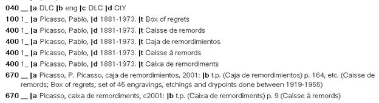
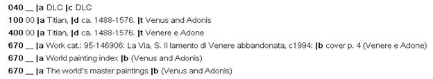
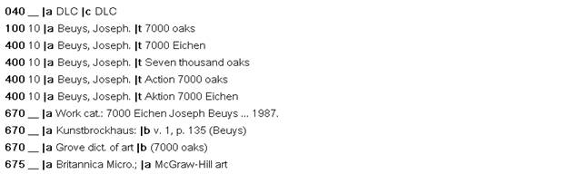
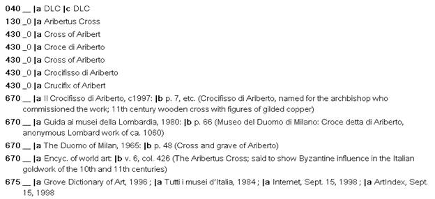

Individual works of art
SCM memo H 405 lists “Works of art, Individual” as Name headings (100,110, or 130)
AACR2:
25.3. Works Created After 1500
25.3A.
;
Use the title or form of title in the original language by which a work created after 1500 has become known through use in manifestations of the work or in reference sources.
Dickens, Charles
[Pickwick papers]
The posthumous papers of the Pickwick Club
etc.
LCRI:
Named Individual Works of Art
Construct a uniform title for a named work of art when it is needed for an access point (main entry, added entry, subject entry) on a bibliographic record.
Use as the uniform title the title found in English-language reference sources.
If not found in English-language reference sources, use other reference sources. However, a reference source that routinely uses one language for all titles should not be used unless necessary. If the evidence is inconclusive, use (in this order of preference) the title found in:
encyclopedias or dictionaries
indexes
a catalogue raisonné for the artist
catalogs issued by the body owning the work of art.
Make name/title (or title, if responsibility for the work is unknown) references from titles not chosen as the uniform title.
Follow the rules in chapter 21 for the choice of access points.
100 1# $a Cole, Thomas, $d 1801-1848. $t Garden of Eden
100 1# $a Picasso, Pablo, $d 1881-1973. $t Demoiselles d'Avignon
400 1# $a Picasso, Pablo, $d 1881-1973. $t Young ladies of Avignon
100 0# $a Leonardo, $c da Vinci, $d 1452-1519. $t Mona Lisa
400 0# $a Leonardo, $c da Vinci, $d 1452-1519. $t Gioconda
400 0# $a Leonardo, $c da Vinci, $d 1452-1519. $t Joconde
100 0# $a Sebastián, $d 1947- $t Caballito
100 0# $a Christo, $d 1935- $t Wrapped Reichstag
400 0# $a Christo, $d 1935- $t Verhüllte Reichstag
400 0# $a Jeanne-Claude, $d 1935- $t Wrapped Reichstag
(N.B.: This reference is an exception to the principles of AACR2 whereby secondary access is made for joint creators on the bibliographic record for the item. References in name authority records are made here because most uses of headings for individual works of art will be as a secondary subject entries)
Name authority examples for individual works of art:


